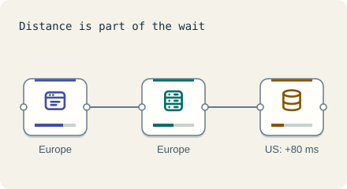

Start · 3 minutes
What a request is, and p50 versus p99
A request is one question and one answer. Averages hide the slow ones that people remember.
Open this lesson
One tap, one request
A request is one question from a person ("show my feed") and one answer. Every request waits a little. Latency is that wait, in milliseconds (ms). A blink is about 100 ms (approx.).
p50 and p99
Move the two slow waits and compare p50 with p99. The number of requests on a page changes how often someone meets a slow answer.
Try the idea
People in Europe wait too long. Follow the whole request path: move both the app servers and their database to Europe so no request crosses the ocean.
Key numbers
- Same-zone hop
- ≈ 1 ms. approx.
- Across the Atlantic and back
- ≈ 80 ms. round trip, approx.
- Europe to Asia Pacific and back
- ≈ 160 ms. round trip, approx.
Check your reasoning
Think through these questions before opening the lesson. In the game you can test the idea and compare your reasoning.
- What is p99?
- Why watch p99 and not just the average?
- How do you cut the wait for far-away users?
The key point
Judge a system by its slow requests, and remember distance is part of latency.